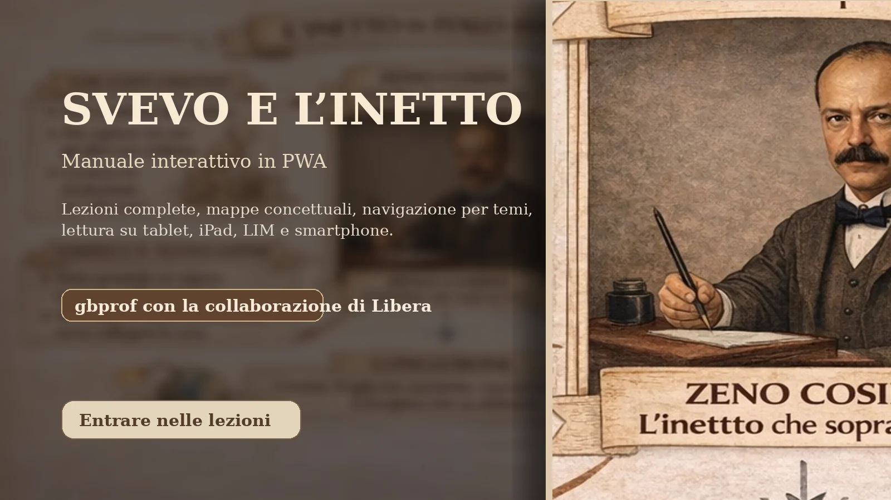
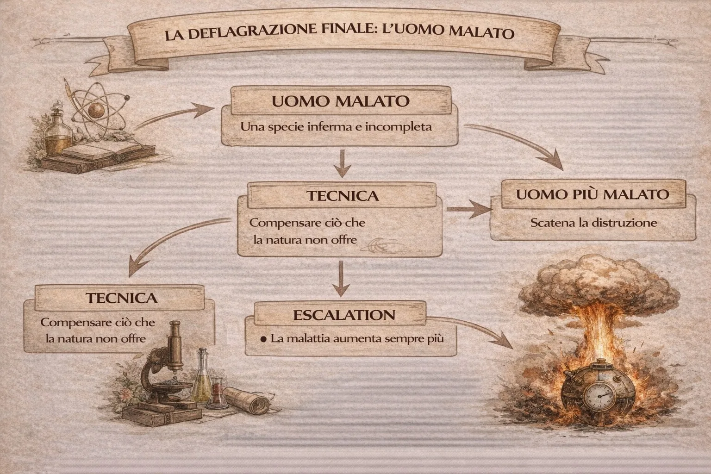
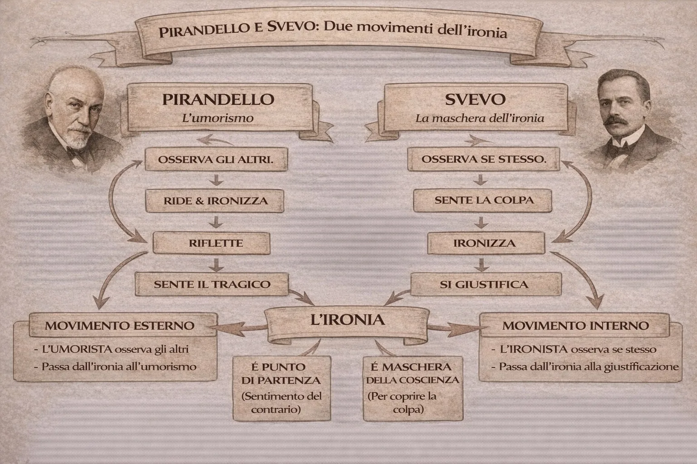

La vita di Zeno e la struttura del romanzo
Nel romanzo La coscienza di Zeno di Italo Svevo accade qualcosa di insolito: la vita del protagonista non viene raccontata in ordine cronologico. Questo non significa che la vita d…
Apri lezione
Una web app pensata per la lettura scolastica: mappe concettuali, spiegazioni sintetiche, testi completi e navigazione pulita su iPad, smartphone, LIM e desktop.
Ogni pagina offre una mappa concettuale iniziale, una sintesi guidata e un pulsante Lezione completa che apre il testo integrale della spiegazione. La PWA resta installabile e consultabile offline almeno per la shell e le pagine principali già visitate.
Nel romanzo La coscienza di Zeno di Italo Svevo accade qualcosa di insolito: la vita del protagonista non viene raccontata in ordine cronologico. Questo non significa che la vita d…
Apri lezione
Nel romanzo ottocentesco e in quello novecentesco cambia profondamente il modo di intendere la verità. Un confronto molto interessante è quello tra la prefazione de I promessi spos…
Apri lezione
Quando leggiamo La coscienza di Zeno di Italo Svevo, una delle prime impressioni che abbiamo è molto semplice: Zeno sembra un uomo debole, indeciso, incapace di concludere qualcosa…
Apri lezione
Uno dei nodi più profondi della Coscienza di Zeno di Italo Svevo è il rapporto tra Zeno e il padre. A prima vista sembra semplice: il padre rappresenta l’uomo sano, forte, sicuro; …
Apri lezione
Uno dei temi centrali de La coscienza di Zeno di Italo Svevo è il rapporto tra l'individuo moderno e la complessità della vita. Zeno Cosini non è un eroe tradizionale: è un uomo ch…
Apri lezione

Quando leggiamo i romanzi di Italo Svevo incontriamo spesso una figura particolare: l’inetto. A prima vista potrebbe sembrare semplicemente un uomo debole, incapace di agire o di a…
Apri lezione
Il romanzo di Italo Svevo si conclude con una delle immagini più sorprendenti e inquietanti della letteratura del Novecento. Dopo aver raccontato la propria storia di nevrosi, auto…
Apri lezione
La poetica di Italo Svevo nella Coscienza di Zeno ruota attorno a una figura nuova nella letteratura europea: l’inetto. Zeno Cosini non è un eroe, ma un uomo incerto, contraddittor…
Apri lezione
Pirandello e Svevo partono entrambi da una constatazione tipica della modernità: l’uomo non coincide più con se stesso. L’identità è fragile, contraddittoria, divisa.
Apri lezione